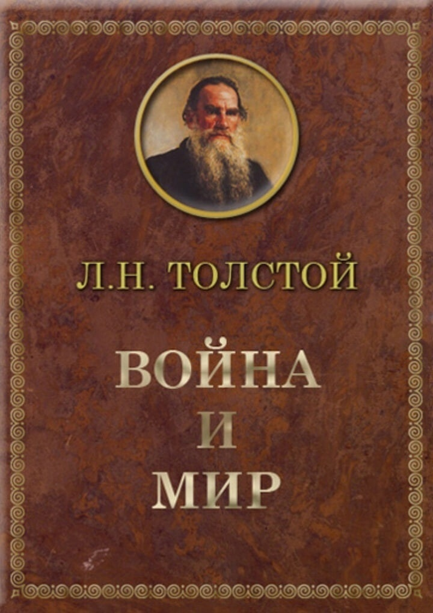
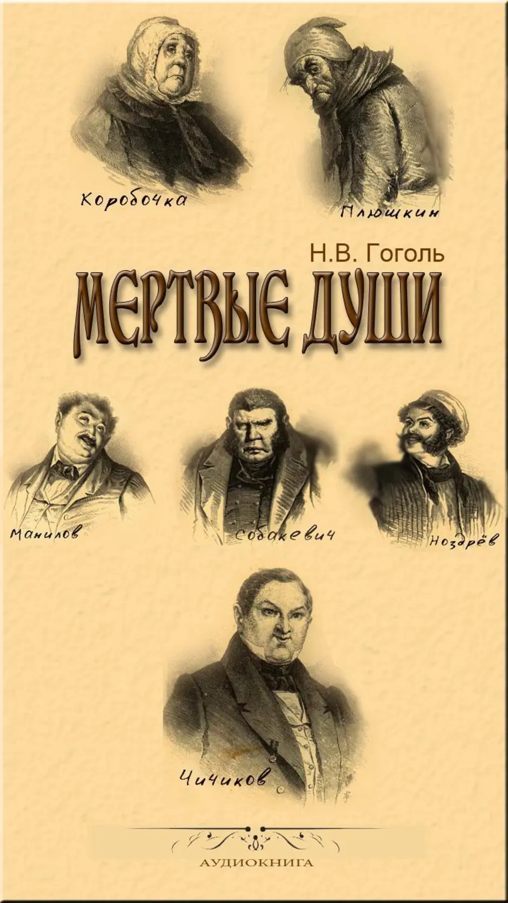
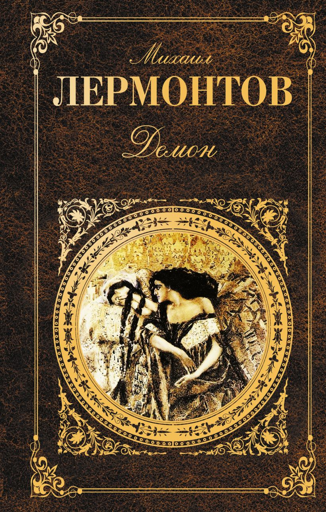
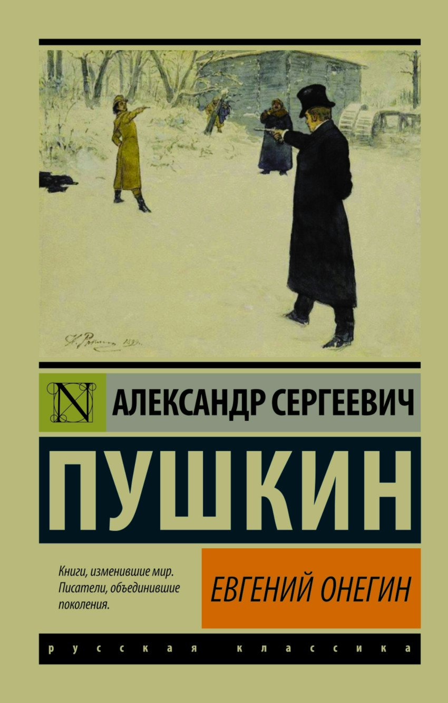

|
|
|

|
Название: Война и мир
Автор: Лев Толстой
Жанр: роман-эпопея
Война и мир» – русский исторический (и немного фантастический) роман Льва Толстого,
опубликованный в 1865-1869 годах.
В романе рассказывается о союзах и войнах между Россией и Францией в начале XIX века,
а также о жизни персонажей, увлекаемых историческими событиями. «Война и мир»
считается одним из самых значительных романов в русской и мировой литературе
|
Цена:350 р
|
|

|
Название: Мёртвые души
Автор: николай Гоголь
Жанр: поэма
«Мёртвые ду́ши» — произведение Николая Васильевича Гоголя, жанр которого сам автор обозначил как поэма.
Писать книгу Гоголь начал в 1835 году как трёхтомник.
Первый том был издан в 1842 году.
Практически готовый второй том был утерян, но сохранилось несколько глав в черновиках.
Третий том не был начат, о нём остались только отдельные сведения,
которые были опубликованы вскоре после смерти автора в 1852 году.
|
Цена:225 р
|
|

|
Название: Демон
Автор: Михаил Лермонтов
Жанр: поэма
«Демон» — поэма русского писателя Михаила Лермонтова, над которой он работал в течение 10 лет
— с 1829 по 1839 год.
Из-за цензурных запретов произведение долгое время не допускалось к печати и
распространялось в списках, в которых были представлены как его ранние,
так и поздние версии; всего, по данным исследователей, насчитывалось
восемь авторских редакций «Демона». В 1842 году в журнале «Отечественные записки»
были опубликованы отрывки из поэмы. Первое полное издание произведения состоялось
в Германии в 1856 году, в России — в 1860 году.
|
Цена:250 р
|
|

|
Название: Евгений Онегин
Автор: А.С. Пушкин
Жанр: Роман в стихах
«Евге́ний Оне́гин» (дореф. «Евгеній Онѣгинъ») — роман в стихах русского поэта Александра Сергеевича Пушкина,
начат 9 мая 1823 года и закончен 5 октября 1831 года, одно из самых значительных
произведений русской словесности. Повествование ведётся от имени безымянного автора,
который, впрочем, в первых же строфах называет Онегина «добрый мой приятель».
По известному определению В. Г. Белинского, Пушкин назвал «Евгения Онегина» романом
в стихах, поскольку в нём изображена «жизнь во всей её прозаической действительности».
|
Цена:300 р
|
|